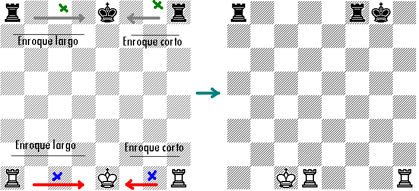
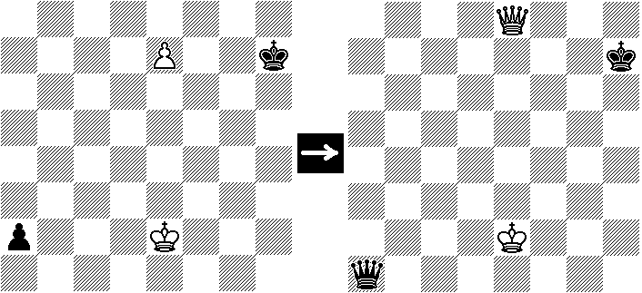
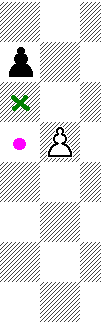
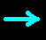
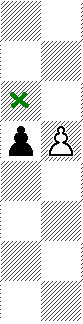
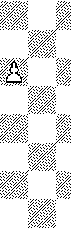

Movimientos extraordinarios
Enroque
El enroque es un movimiento extraordinario del ajedrez, el cual, solamente se puede realizar en una sola ocasión durante toda la partida. Consiste en un movimiento simultáneo de posiciones entre el rey y la torre. El rey avanza dos casillas en dirección hacia la torre con la que se enrocará y la torre se coloca a la par del rey saltando sobre él.
Reglas del enroque
- El rey no debió ser movido anteriormente (debe estar su casilla original).
- La torre con la que se enrocará no debió ser movida en una jugada anterior.
- No deben haber piezas en medio, ni adversarias, ni del mismo bando.
- Las casillas por las que pase el rey no deben estar atacadas por piezas enemigas.
- El rey no puede estar en jaque.
- El rey no puede colocarse en jaque una vez realizado el enroque.

Coronación del peón
Después de múltiples avances de un peón, si este logra llegar a la última fila, se dice que se corona, pues, puede transformarse en una dama, o en un alfil, o en un caballo. No se puede transformar en rey, ni en peón.

Peón al paso
Si en una columna vecina el peón enemigo avanza dos casillas, según tiene derecho en su primera movida, y un peón está avanzado de modo que ataca la casilla intermedia, tenemos derecho de capturar ese peón "al paso".




El peón es la única pieza que puede tomar al paso.